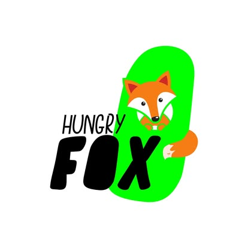

Picos ir mėsainiai
Dideliam
apetitui.
Kai alkis turi charakterį. Picos, mėsainiai ir traškūs užkandžiai Kaune.
Šiaurės pr. 8D-1, Kaunas
Hungry FOXPicos ir mėsainiaiUžsuk. Paragauk. Sugrįžk.Kaunas
Hungry FOX · Kaunas
Picai ar mėsainiui?
Picų ir burgerių taškas Eiguliuose. Užsuk, kai norisi sočiai pavalgyti, pasiimk vakarienę namo arba susitik su draugais prie ką tik iškeptos picos. Čia svarbiausia geras kąsnis ir tavo apetitas.
Iš mūsų virtuvės